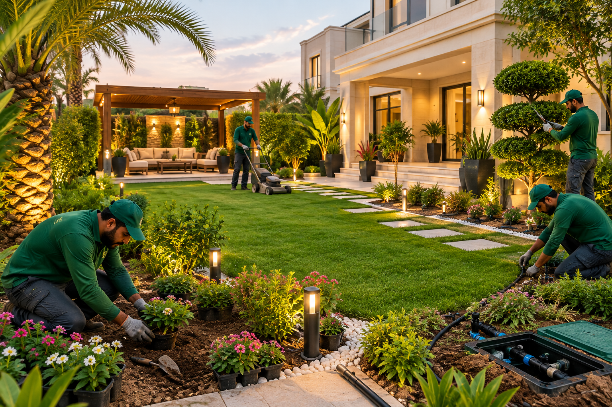

تصميم وتنفيذ
تصميم وتنفيذ الحدائق المنزلية والفلل
الحديقة الناجحة تبدأ من فكرة مدروسة قبل أن تُغرس أول شتلة. نبدأ بزيارة الموقع وقياس المساحة ودراسة اتجاه الشمس والرياح ونوع التربة، ثم نجلس معكم لنفهم أسلوب حياتكم: هل تريدونها مكاناً لجلسات العائلة؟ أم ملعباً للأطفال؟ أم واجهة أنيقة تليق ببيتكم؟
بعد ذلك نضع تصوراً متكاملاً يوزّع الممرات والمسطحات الخضراء والأشجار والجلسات بشكل متوازن، ونقدّم لكم مخططاً واضحاً وتقديراً للتكلفة قبل البدء، فتعرفون كل خطوة مسبقاً، ثم ينفّذ فريقنا التصميم بدقة على أرض الواقع حتى التسليم.
- معاينة ميدانية ودراسة للمساحة والتربة والمناخ
- تصميم يناسب الفلل والقصور والبيوت والاستراحات
- اختيار نباتات تتحمل أجواء الرياض وتعيش طويلاً
- تنفيذ كامل تحت إشراف فريق متخصص
- تعديل وتطوير الحدائق القائمة دون البدء من الصفر